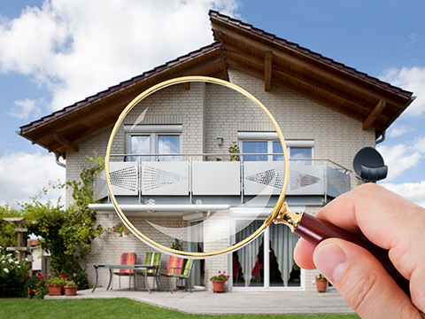
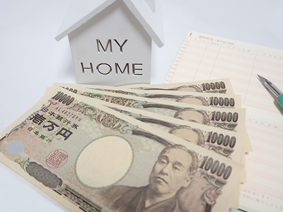

すぐに現金がほしい、不動産を処理したい方のために
～不動産会社が家や土地を買い取る方法～
不動産買取は、できるだけ早くマンションや戸建て、土地などの不動産を現金化したいという方におすすめです。そのほかの手法に比べて売却成立までの期間が短く、余計な手間なども省けます。こちらでは、甲府市と周辺エリア(甲斐市・笛吹市・中央市・中巨摩郡昭和町)で不動産売却を手がける共同開発が不動産買取についてご紹介します。
不動産買取とは

仲介売却における買主様は、販売活動によってご応募いただいた一般個人の場合がほとんどです。一方、不動産買取では買い手が不動産会社になるのが特徴です。不動産会社が直接買い取るので、とにかくスピーディーな取引が実現できます。早ければ、契約締結の翌日にお支払いができるケースもございます。このように不動産買取は、売却をお急ぎの方にぴったりな方法となります。
不動産買取のメリット
不動産買取は、スピーディーに不動産を手放せることが最大のメリットです。しかし、それ以外にも数多くのメリットがございます。以下で、代表的なメリットをご紹介します。
仲介手数料が不要
仲介売却では、不動産会社への仲介業務に対しての成功報酬である仲介手数料が発生します。この額は、売買価格の3%+6万円となり、決して少ない金額ではありません。一方、不動産買取の場合は、そもそも仲介業務が発生しませんから仲介手数料も不要です。
現状のまま売却可能
築古の物件などの場合、仲介売却で価値を向上するためにリフォームや改修工事を行う場合があります。また、内覧時に好印象を持ってもらうために、部屋の清掃や片付けにも務めなくてはなりません。一方で不動産買取の場合は、リフォームや改修工事はすべて不動産会社が行うため負担はゼロ。また、メンテナンスなども必要ないため、現状のままスムーズに不動産を手放せます。なお、個人間取引と異なり、売却後の瑕疵担保責任も免責となり、アフターフォローなどの必要もありません。
内覧対応がなく、手間もかからない
仲介売却を行う際には、売主様ご本人が購入希望者様と接し、物件の良さをアピール必要があります。こうした対応が得意な方であれば良いですが、そもそも人と接するのが苦手という方もいらっしゃるでしょう。また、お仕事が忙しく、内覧対応自体が難しいというケースも少なくありません。不動産買取の場合は、こうした買主様対応がすべて不要です。余計な手間がかからないため、手軽に不動産を売却できます。
プライバシーが守られる
仲介売却で行われる販売活動は、プライバシーを守りながら進めることも可能です。ただし、あまりに露出がないと購入希望者様も集まりにくくなるため、ある程度の情報提供は避けられません。その結果、近所や職場の方に売却を知られてしまう可能性もゼロではないでしょう。一方、不動産買取はお客様と不動産会社との2社間取引です。外部に情報を出す必要がなく、プライバシーが厳格に守られます。
買取保証について
不動産買取は、スピーディー&手軽な点が魅力ですが、売却額が少なくなってしまうというデメリットもあります。そのため、売却期間が決まっているものの、少しでも高く売りたいというニーズに応えるのが難しい手法でした。
こうした希望にお応えできるのが買取保証です。この手法では、はじめに仲介売却を行います。そこで売買契約が成立すれば取引は完了。しかし、なかなか買主様が見つからない場合は、一定の期間で不動産買取に切り替えが可能です。この際には、事前に決めた買取金額が適用されます。このように高額売却を目指しつつも、決まった期間までには必ず売却できるという点が、買取保証の魅力です。
お問い合わせから売却までに流れ

不動産を少しでも早く売却できる不動産買取というサービス。当社では、ご相談後に速やかに買取価格のご提示を行い、少しでも早い不動産売却のお手伝いをしています。
- STEP1売却のご相談
- 不動産売却をご検討中の方は、まずは当社までお気軽にご相談ください。ヒアリングを実施し、それぞれの状況に応じて最適なご提案を差し上げます。この際、不動産買取が適切と判断した場合は、現地での不動産調査を実施いたします。
- STEP2不動産調査&買取価格のご提示
- 買取対象となる不動産にスタッフが赴き調査を実施。その結果に応じて買取価格をご提示いたします。
- STEP3買取契約の締結
- 当社からの査定額にご納得いただけましたら、買取契約の締結をお願いいたします。この際には、お引き渡し時期などについても相談の上決定いたします。
- STEP4お支払い・お引き渡し
- 取り決めに従い、決済金（買取金）をお支払いします。早い場合で、契約締結の即日～翌日での対応となります。その後、事前に決定した日時に不動産の引き渡していただき、取引完了です。
- すぐに現金化したい、そんなときに役立つのが不動産売却
-
当社では、仲介売却だけでなく不動産買取にも対応しております。それぞれのお客様の状況に応じて、最適なご提案を差し上げますので、お気軽にご相談ください。売却金額だけを見れば、不動産買取は仲介売却に劣ります。しかし、販売活動を省けることや、それ以外の諸条件を見ると、どちらが最適かは人それぞれ異なります。たとえば結婚や転勤などで現居の売却が必要であれば、スピーディーな売却が実現できる不動産買取は非常におすすめです。
また、当社は買取保証にも対応しております。まずは仲介売却からはじめて、状況に合わせて買取に切り替えるといった柔軟な対応も可能です。ご希望に沿ったサービスのご提供に努めておりますので、まずはご相談ください。